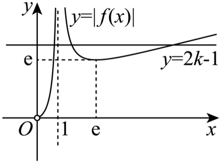
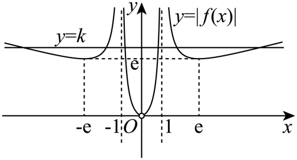

示例学校高二周测（4） Q11
题目
11．对于函数f(x)=(x)/(lnx)，下列说法正确的是（ ）
A．f(x)在(0,e)上单调递减，在(e,+∞)上单调递增
B．f(π)<f(2)
C．设g(x)=|f(x)|-2k+1有3个不同的零点，则k>(e+1)/(2)
D．若方程|f(|x|)|=k有6个不等实数根，则k>e
答案与解析
11.【详解】解：对于A选项，f(x)=(x)/(lnx)的定义域为(0,1)∪(1,+∞)，所以A选项错误；
对于B选项，f^'(x)=(lnx-1)/(ln^2x)，令f^'(x)>0可得x>e，
即函数f(x)在(e,+∞)上单调递增，f(2)=(2)/(ln2)=(4)/(2ln2)=(4)/(ln4)=f(4),e<π<4，
即f(π)<f(4)=f(2)，所以B选项正确；
对于C选项，令g(x)=|f(x)|-2k+1=0，即|f(x)|=2k-1，
g(x)=|f(x)|-2k+1有3个不同的零点等价于函数y_1=|f(x)|和函数y_2=2k-1有3个不同的交点，

由图像可知，2k-1>e，解得k>(e+1)/(2)，所以C选项正确；对于D选项，方程|f(|x|)|=k有6个不等实数根等价于函数y_1=|f(|x|)|和函数y_2=k有6个不同的交点，

由图像可知，k>e，所以D选项正确．结构化摘要
{
"question_id": "szzx2024g2week4_q011",
"answer": "BCD",
"assets": [
{
"id": "img002",
"type": "image",
"rel_id": "rId8",
"source": "word/media/image2.png",
"path": "assets/szzx2024g2week4_q011_image_02.png"
},
{
"id": "img_c",
"type": "image",
"rel_id": "custom_c",
"source": "user_provided/图片1.png",
"path": "assets/szzx2024g2week4_q011_image_c.png"
}
],
"ole_objects": [],
"extraction": {
"source_paragraph_range": [
29,
34
],
"solution_paragraph_range": [
11,
19
],
"formula_count": 29,
"image_count": 2,
"ole_count": 0,
"quality_flags": [
"contains_images",
"contains_omml"
]
}
}